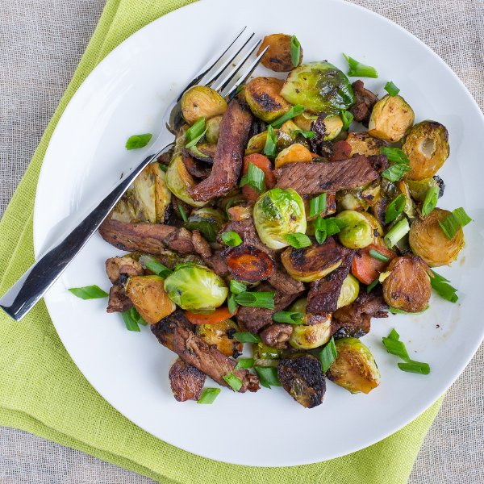

Strip Steak & Brussels Sprouts Stir Fry with Jalapeño Pepper

Total Time
50 min
Nutrition (per serving)
669.5 kcalCalories
46.2 gProtein
28.9 gCarbs
44.5 gFat
Full nutrition table
| Calories | 669.5 kcal |
| Total fat | 44.5 g |
| Saturated fat | 27.8 g |
| Trans fat | 1.4 g |
| Cholesterol | 103.8 mg |
| Sodium | 159.3 mg |
| Carbohydrates | 28.9 g |
| Fiber | 10.7 g |
| Sugars | 7.5 g |
| Protein | 46.2 g |
| Potassium | 1615.1 mg |
| Calcium | 164.3 mg |
| Iron | 7.2 mg |
| Vitamin A | 1988.3 IU |
| Vitamin C | 208.8 mg |
| Vitamin D | 6.8 IU |
Cookware
Ingredients
- 2 lbBrussels sprouts
- 2 mediumcarrots
- 4 clovesgarlic
- 2 (1 inch) piecesginger root
- 1 small bunchgreen onions (scallions)
- 2jalapeño peppers
- 1 ½ lbstriploin (New York strip) steak
- cornstarch
- rice vinegar
- soy sauce
- virgin coconut oil
Steps
- Wash brussels sprouts, carrots, jalapeños, and green onions.2 lb brussels sprouts
2 medium carrots
2 jalapeño peppers
1 small bunch green onions (scallions) - Trim, peel, and slice carrots on the diagonal into ¼ inch rounds. Transfer to a bowl.
- Halve, seed, and thinly slice jalapeños crosswise. Peel and mince garlic. Peel and mince or grate ginger. Transfer all to a small bowl.4 cloves garlic
2 (1 inch) pieces ginger - Trim green onion root ends and slice on the diagonal. Add whites to bowl with jalapeño, garlic, and ginger; transfer the greens to a separate bowl and save for garnishing.
- Trim rough ends of brussels sprouts and halve lengthwise. Transfer to a separate bowl.
- In a small bowl, prepare sauce by whisking together soy sauce, vinegar, water, and cornstarch.4 tbsp soy sauce
2 tbsp rice vinegar
4 tbsp water
½ tsp cornstarch - Heat a skillet over medium-high heat.
- Thinly slice steak into strips.1 ½ lb striploin (New York strip) steak
- Coat bottom of skillet with oil. Add steak strips in a single layer and cook until browned, 2-3 minutes per side. Transfer to a plate.2 tbsp virgin coconut oil
- Add more oil to skillet, followed by brussels sprouts. Cook, stirring occasionally, until golden brown, 2-3 minutes. Transfer to plate with steak.2 tbsp virgin coconut oil
- Add more oil to skillet, followed by green onion whites, jalapeño, garlic, and ginger. Stir and cook until fragrant, 15-30 seconds. Add carrot and cook, stirring occasionally, until tender, 2-3 minutes.2 tbsp virgin coconut oil
- Return steak and sprouts to skillet and add sauce. Cook, stirring occasionally, until sauce is thickened, 2-3 minutes.
- To serve, place stir fry on a plate and garnish with remaining green onions. Enjoy!